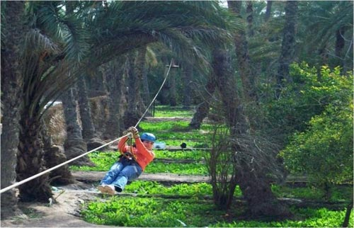
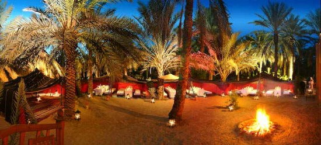

Tunisia Tourism
Live Your Life
Top 10 Adventurous Activities in the South of Tunisia
While the likes of Hammamet and Tunis might be seen as the tourist hot spots of Tunisia, one should not simply restrict their holiday to these areas.
The South of the country offers some breath-taking experiences and if you are in the mood to leap off your deckchair and engage in some adventurous activities, this could be the region for you.
Tamerza Canyon
The first suggestion is perhaps one of the most mesmeric attractions in the country. After driving for an age around the lifeless desert, you’ll suddenly stumble across the Tamerza Canyon.
There is no such thing as a poor view at this attraction and despite what one may initially think in regard to this place, there are several hidden sources of water.
Star Wars Sets
It doesn’t matter whether you love or hate the Star Wars franchise; if you can say that you have visited the set of one of the most popular movie series’ of all time it will work wonders for your ego. Large portions of Star Wars were filmed around these parts and while you’re unlikely to bump into Darth Vader anymore, you will see all of the rustic architecture that contributed to the films’ great success.
Unsurprisingly, this is an attraction which is hugely commercial and this means that there are plenty of opportunities to purchase memorabilia as well.
Lezard Rouge
If we switch across to Tozeu, one can visit the Lezard Rouge which can only be described as a functional antique train. The fact that it was first devised in the 19th Century yet still manages to remain in use is hugely impressive and subsequently attracts hordes of tourists. It won’t come as a surprise to hear that this experience prompts a lot of camera flashes, with the train encouraging some fantastic snaps.
Sahara Lounge
If you are looking to really put the A into adventure, a trip to the Sahara Lounge in El Birka Tozeur could be advisable. This isn’t your ordinary visit to the desert, this particular attraction contains climbing walls, zip wires, children’s soft play areas as well as paintballing. At the end of the day, there’s also a lounge area to take a break from the hectic activities you will have been put through.

Golf Oasis
One of the more recent activities that has donned the country is golf. Tunisia has leapt on the golf bandwagon over the last few years, with the country now fully aware that this is a sport that attracts hordes of tourists every year. In terms of suggestions, you’d be hard pressed to beat Golf Oasis Tozeur which is regarded as one of the best around.
Sidi Bouhlel Canyon
This is another attraction for those Star Wars enthusiasts, with Sidi Bouhlel Canyon being the location for other scenes for the franchise. Both A New Hope and The Phantom Menace have scenes taken from this location, meaning that it’s a must-see if you again want to tick off another set visit.
Chak Wak Park
For those interested in a spot of history, a trip to Chak Wak Park should most definitely be added to the agenda. This was the brainchild of the former mayor of Tozeur and can only be described as one of the most glorious examples of history deciphered in modern form. 3D dinosaurs are the pick of the attraction, although any family who wishes to educate the kids on the Hannibal and the Carthaginian wars won’t be disappointed either.

Belvedere Rocks
Several of the experiences we have noted have focussed on terrific views and Belvedere Rocks certainly falls into this category. These rocks, which have been adjusted so that they now form steps, lead up to a high point which provides the perfect view across the surrounding salt lakes and oasis. It’s hardly a day-job, as it should only take 20 minutes, so it’s ideal for those evening excursions.
Paradise zoo
The name of this next attraction probably gives the game away, although this is hardly your standard zoo which you’ll see in most major regions of Europe. Instead, it contains everything out of the ordinary and if you’re the type of person who’d like nothing more to see a camel glugging a bottle of Coca-Cola, this is the place for you.
Roman Pools
Last but not least are Tunisia’s famous Roman Pools. It would be fair to say that this is the main attraction that is part of Gafsa so if you’re heading over there, make it your priority to take a look at these. Many of the pools are still used for swimming, but if you don’t fancy getting your feet wet you can just stand and marvel at the clear waters that both pools boast.